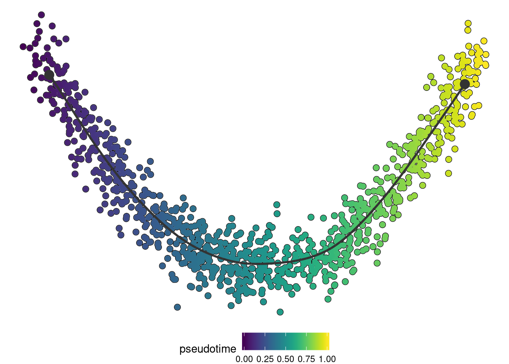

library(dynwrap)This vignette describes how to include your own method into the dynverse workflow. We’ll illustrate this with a very basic method: using one of the components of a PCA as the pseudotime.
A method defined in R has two parts: a definition and a function.
The definition contains information on the method, its parameters and its required or optional inputs. The possibilities are quite extensive (see dynwrap::definition()), but essentials are:
dynparam package.dynwrap::priorsdefinition <- definition(
method = def_method(
id = "comp1"
),
parameters = def_parameters(
dynparam::integer_parameter(
id = "component",
default = 1,
distribution = dynparam::uniform_distribution(1, 10),
description = "The nth component to use"
)
),
wrapper = def_wrapper(
input_required = "expression",
input_optional = "start_id"
)
)The actual inference of the trajectory is done in the run function. This function accepts:
run_fun <- function(expression, priors, parameters, seed, verbose) {
pca <- prcomp(expression)
pseudotime <- pca$x[, parameters$component]
# flip pseudotimes using start_id
if (!is.null(priors$start_id)) {
if(mean(pseudotime[start_id]) > 0.5) {
pseudotime <- 1-pseudotime
}
}
dynwrap::wrap_data(cell_ids = rownames(expression)) %>%
dynwrap::add_linear_trajectory(pseudotime = pseudotime)
}This function returns a trajectory object as described in create a trajectory. You may also add other relevant information to this output, often some timing checkpoints (add_timings), dimensionality reduction (add_dimred) or a cell clustering (add_grouping). Check out the reference for an overview or post an issue or pull request if you want a type of output to be added.
To wrap the method, use create_ti_method_r with the definition and run function. At this stage you can also define some R packages that have to be installed or loaded.
ti_comp1 <- create_ti_method_r(definition, run_fun, package_loaded = "dplyr")This function will return another function that can be used to change any parameters when running the method. This function is also useful to document any parameters when included in an R package.
That’s it, let’s try it out:
dataset <- dynwrap::example_dataset
trajectory <- infer_trajectory(dataset, ti_comp1())if ("dynplot" %in% rownames(installed.packages())) {
dynplot::plot_dimred(trajectory, color_cells = "pseudotime" , expression_source = as.matrix(dataset$expression))
}
The easiest way to make this method available to others is to put it in anR package which exports the ti_* function. Here you can also provide documentation using roxygen2. The parameters can be automatically documented from the information provided in the description using @eval dynwrap::generate_parameter_documentation(definition) (adapt the name of definition if necessary).
#' Infer a trajectory from the first principal component
#'
#' @eval dynwrap::generate_parameter_documentation(definition)
#'
#' @import dplyr
#' @export
#'
#' @examples
#' dataset <- dynwrap::example_dataset
#' model <- dynwrap::infer_trajectory(dataset, ti_comp1())
ti_comp1 <- create_ti_method_r(definition, run_fun)The parameter documentation will look like follows:
generate_parameter_documentation(definition)## [1] "@param component The nth component to use. Domain: U(1, 10). Default: 1. Format: integer."We also strongly encourage you to include within our collection of TI methods available in the dynmethods R package. Feel free to create an issue or send us a pull request.